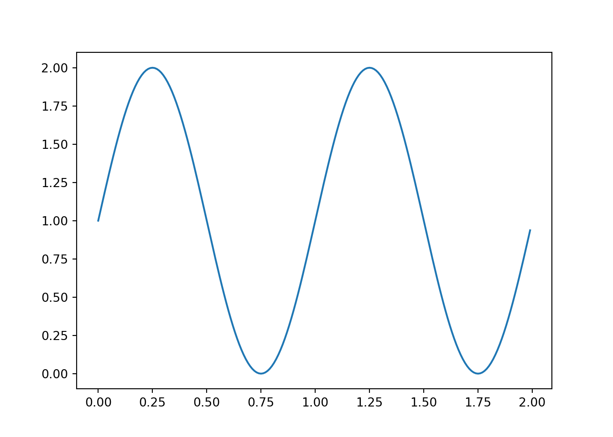
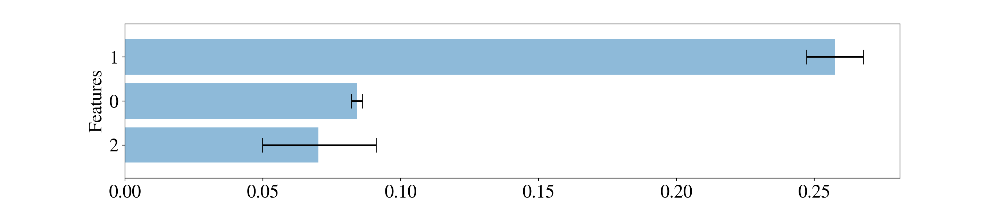

Motivation
RStudio-Server 1.2 Preview has advanced reticulate support, which allows us to use packages developed in Python from within RStudio. I recently found this functionality useful while trying to compare the results of different uplift models. Though I did have R’s uplift package producing Qini charts and metrics, I also wanted to see how things looked with Waylift’s promising pylift package. Since pylift is only available in python, reticulate made it easy for me to quickly use pylift from within RStudio.
In the article below, I’ll show how I worked through the following circumstances: - Since pylift has only been tested on Python >= 3.6, and my system version of Python was 2.7, I needed to build and install Python 3.6 for myself, preferrably within a self-contained virtual environment - I wanted to install pylift in the virtual environment and set up reticulate in my R Project to work within that environment - Finally, I needed to access pylift from an R Markdown document via the reticulate interface
Setting up Python, virtualenv, and RStudio
Note: for consistency, I always use an instance created via r-studio-instance and a base project from r-studio-project.
Python 2.7 is the default on the systems I use (CentOS 6/7). Since I did not want to modify the system-level Python version, I installed Python 3.6.x at the user level in $HOME/opt and created a virtual environment using Python 3. I then activated the Python 3 environment and installed pylift. Finally, I ensured RStudio-Server 1.2 was installed, as it has advanced reticulate support like plotting graphs in line in R Markdown documents.
Below is a brief script that accomplishes the tasks in bash on CentOS 7:
cd ~
mkdir tmp
cd tmp
wget https://www.python.org/ftp/python/3.6.2/Python-3.6.2.tgz
tar -xzvf Python-3.6.2.tgz
cd Python-3.6.2
./configure --prefix=$HOME/opt/python-3.6.2 --enable-shared
make
make install
cd ~
export LD_LIBRARY_PATH=$LD_LIBRARY_PATH:$HOME/opt/python-3.6.2/lib
virtualenv -p $HOME/opt/python-3.6.2/bin/python3 pylift
source pylift/bin/activate
cd pylift
git clone https://github.com/wayfair/pylift
cd pylift
pip install .
pip install -r requirements.txt
cd
wget https://s3.amazonaws.com/rstudio-ide-build/server/centos6/x86_64/rstudio-server-rhel-1.2.1335-x86_64.rpm
sudo yum install -y --nogpgcheck rstudio-server-rhel-1.2.1335-x86_64.rpm
sudo rstudio-server startSome notes:
- the
--enable-sharedoption is required when building Python in order for reticulate to work - the
LD_LIBRARY_PATHlibrary also needs to be set prior to creating the virtual environment - we use virtualenv to create a virtual environment called “pylift” and then ensure that all Python packages are installed to that environment only (so as not to pollute any other environments we are working with)
- we then clone the pylift source and install pylift along with all of its requirements via
pip install -r requirements.txt - finally, we install the RStudio Server 1.2 Preview version in order to leverage its advanced reticulate features
Using Python from within RStudio via reticulate
Switching from bash to RStudio we load reticulate and set it up to use the virtual environment we just created. Finally, and specific to pylift, we set matplotlib parameters so that we can plot directly in R.
library(reticulate)
Sys.setenv(LD_LIBRARY_PATH = paste0(Sys.getenv("HOME"),"/opt/python-3.6.2/lib"))
Sys.getenv("LD_LIBRARY_PATH")## [1] "/home/rstevenson/opt/python-3.6.2/lib"use_virtualenv("/home/rstevenson/pylift", required=TRUE)
py_config()## python: /home/rstevenson/pylift/bin/python
## libpython: /home/rstevenson/opt/python-3.6.2/lib/libpython3.6m.so
## pythonhome: /home/rstevenson/opt/python-3.6.2:/home/rstevenson/opt/python-3.6.2
## virtualenv: /home/rstevenson/pylift/bin/activate_this.py
## version: 3.6.2 (default, May 4 2019, 14:00:42) [GCC 4.8.5 20150623 (Red Hat 4.8.5-36)]
## numpy: /home/rstevenson/pylift/lib/python3.6/site-packages/numpy
## numpy_version: 1.16.3
##
## NOTE: Python version was forced by use_python function# Currently this must be run in order for R-markdown plotting to work
matplotlib <- import("matplotlib")
matplotlib$use("Agg", force = TRUE)Test that it works
The following replicates the first part of: https://github.com/wayfair/pylift/blob/master/examples/simulated_data/sample.ipynb
import matplotlib.pyplot as plt
import numpy as np
t = np.arange(0.0, 2.0, 0.01)
s = 1 + np.sin(2*np.pi*t)
plt.plot(t,s) When run, the above code chunk should display a sinusoidal graph below it.
import numpy as np, matplotlib as mpl, matplotlib.pyplot as plt, pandas as pd
from pylift import TransformedOutcome
from pylift.generate_data import dgp
# Generate some data.
df = dgp(N=10000, discrete_outcome=True)
# Specify your dataframe, treatment column, and outcome column.
up = TransformedOutcome(df, col_treatment='Treatment', col_outcome='Outcome', stratify=df['Treatment'])
# This function randomly shuffles your training data set and calculates net information value.
up.NIV()
The above Python chunk uses reticulate from within RStudio to interact with pylift in the context of a custom virtual environment, using a custom version of Python. This degree of customization and functionality should be useful to users who:
- want to use a different Python version than they typically use while not affecting their typical setup by way of a virtual environment
- want to install a Python module like pylift within a virtual environment so as not to affect any of their user- or system-level Python module installations
- want to use reticulate from RStudio to access a custom virtual environment, Python version, and Python modules
- wants to be able to delete the virtual environment and R-Project and have everything go back to the way it was
- wants to be able to reproduce or share the environment exactly so that the workflow can be shared with others